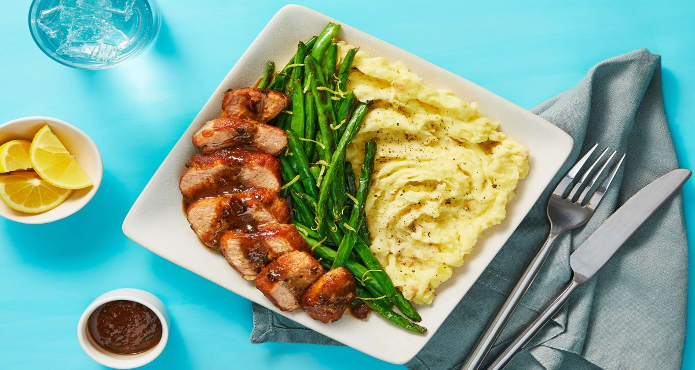

Cranberry Dijon Pork Tenderloin
Cranberry Dijon Pork Tenderloin

Cranberry dijon pork tenderloin with mashed potatoes & roasted green beans
Sweet-tart cranberry jam and zingy Dijon mustard pair up to give pork some flaverful oomph. The creamy mash potatoes and green beans are the perfect sides for this delicious meal.
Ingredients
- 12 oz Yukon Gold Potatoes
- 1 Thumb of Ginger
- 1/4 oz Rosemary
- 1 Lemon
- 12 oz Pork Tenderloin
- 6 oz Green Beans
- 4 TBSP Sour Cream
- 2 TBSP Cranberry Jam
- 1 Chicken Stock Concentrate
- 2 TSP Dijon Mustard
- 1 TBSP Vegetable Oil
- 2 TBSP Butter
- Kosher Salt
- Pepper
Steps
- Prep
- Adjust rack to middle position and preheat oven to 450 degrees. Wash and dry produce.
- Dice potatoes into ½-inch pieces. Zest and quarter lemon. Peel and mince or grate ginger until you have 1 tsp. Pick rosemary leaves from stems; mince leaves until you have 1 tsp.
- Make Mashed Potatoes
- Place potatoes in a medium pot with enough salted water to cover by 2 inches. Bring to a boil and cook until tender, 15-20 minutes.
- Reserve ½ cup potato cooking liquid, then drain and return potatoes to pot. Mash with sour cream and 1 TBSP butter until smooth and creamy, adding splashes of reserved potato cooking liquid as needed. Season with salt and pepper.
- Keep covered off heat until ready to serve.
- Sear Pork
- While potatoes cook, pat pork dry with paper towels and season all over with salt and pepper.
- Heat a drizzle of oil in a large pan over medium-high heat. Add pork and sear, turning occasionally, until browned all over, 4-8 minutes (it'll finish cooking in the next step).
- Turn off heat; transfer pork to one side of a baking sheet. Wipe out pan
- Roast Pork & Beans
- Trim green beans if necessary. Toss green beans in a large bowl with a drizzle of oil, salt, and pepper. Spread out on opposite side of sheet from pork.
- Roast on middle rack until pork is cooked through and green beans are tender, 10-12 minutes.
- Transfer pork to a cutting board to rest. Carefully toss green beans with lemon zest.
- Make Sauce
- Heat a drizzle of oil in pan used for pork over medium-high heat. Add minced ginger and minced rosemary; cook until fragrant, 30 seconds.
- Stir in jam, stock concentrate, mustard, and ¼ cup water. Simmer until slightly thickened, 2-3 minutes.
- Remove from heat; stir in 1 TBSP butter until melted.
- Finish & Serve
- Slice pork crosswise.
- Divide pork, mashed potatoes, and green beans between plates. Drizzle pork with sauce. Serve with lemon wedges on the side